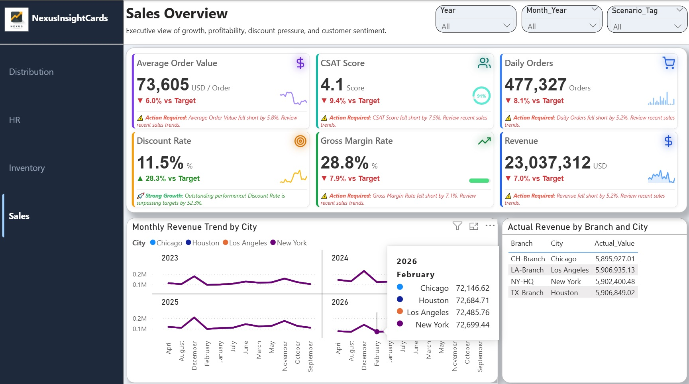

An enterprise-grade custom visual for Microsoft Power BI. Build high-density KPI grids with dynamic sparklines, smart threshold alerts, and DAX-driven formatting in seconds.

Automated, threshold-based intelligent text alerts (e.g., Action Required, Strong Growth) that provide managers with split-second contextual insights.
Embed immediate trend visualization using Line, Area, Bar, Progress Bar, or Gauge charts without cluttering your Power BI canvas.
Full support for format strings (formatStringMeasure) and dynamic unit labels. Each card independently displays $, %, or quantity based on data.
Start building for free, upgrade to unlock advanced insights and unlimited categories.
Free
Contact Us